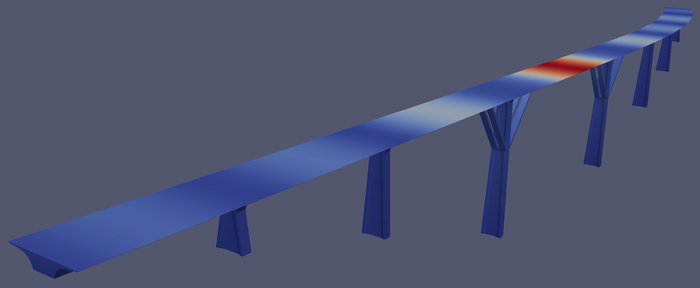
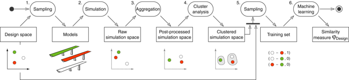
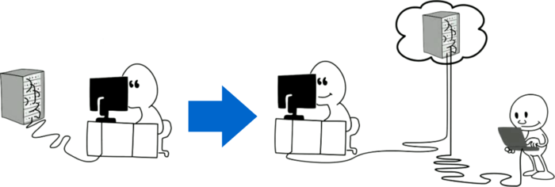

<script type="application/ld+json">
    {
        "@context": "http://schema.org/",
        "@type": "Research",
        "name": "Digital Engineering",
        "description": "",
        "url": "https://webis.de/research/netspeak.html",
        "keywords": [
            "digital-engineering"
        ],
        "creator": [{
                "@type": "Organization",
                "url": "https://webis.de/",
                "name": "The Web Technology & Information Systems Network",
                "alternateName": "Webis"
            },
            {
                "@type": "Person",
                "url": "http://www.uni-weimar.de/medien/webis/people/#burrows",
                "affiliation": "Bauhaus-Universit\u00e4t Weimar",
                "name": "Burrows, Steven"
            },
            {
                "@type": "Person",
                "url": "http://www.uni-weimar.de/medien/webis/people/#stein",
                "affiliation": "Bauhaus-Universit\u00e4t Weimar",
                "name": "Stein, Benno"
            },
            {
                "@type": "Person",
                "url": "http://www.joerg.frochte.de/",
                "affiliation": "Bochum University of Applied Science",
                "name": "Frochte, Joerg"
            },
            {
                "@type": "Person",
                "url": "http://www.uni-weimar.de/medien/webis/people/#gollub",
                "affiliation": "Bauhaus-Universit\u00e4t Weimar",
                "name": "Gollub, Tim"
            }
        ],
        "includedInDataCatalog": {},
        "distribution": []
    }
</script>

<main class="uk-section uk-section-default">
    <div class="uk-container">
        <h1>Digital Engineering</h1>

        <ul class="uk-list">
            <!-- Comment out sections you do not provide -->
            <li><span data-uk-icon="chevron-down"></span> <a href="#synopsis">Synopsis</a></li>
            <li><span data-uk-icon="chevron-down"></span> <a href="#research">Research</a></li>
            <li><span data-uk-icon="chevron-down"></span> <a href="#people">People</a></li>
            <li><span data-uk-icon="chevron-down"></span> <a href="#publications">Publications</a></li>
        </ul>
    </div>

    <div class="uk-container uk-margin-medium">
        <!--
        SECTION Synopsis
        -->
        <h2 id="synopsis">Synopsis</h2>

       <p>The Matilda (Mining Artificially Generated Data) project originated from the German research grant &quot;Strategies for Robust Design of Structures&quot; funded by the State of Thuringia. Overall goal of this research line is to apply data mining techniques to engineering problems, specifically to civil engineering tasks dealing with design, but also to model formation and analysis tasks as they occur as part of diagnosis problems.</p>
        <!--
        SECTION Research
        -->
        <h2 id="research">Research</h2>

        <p><strong>Introduction.</strong> &nbsp;Data for structures such as bridges in civil engineering is stored in the IFC-Bridge format, which is an international standard used in building information modeling, and is part of the IFC (Industry Foundation Classes) data model. A novel extension has been recently developed based on the NURBS (Non-Uniform Rational Basis Spline) paradigm, which is useful for modeling curved surfaces where regular geometry and lines do not suffice. Bridge simulations can be performed using these models with the Finite Element Method for numerical analysis using varying geometry and material properties to identify optimal designs. The Hasetal bridge in Suhl, southwest Thuringia, Germany, pictured below with simulation results, is one example that has been driving the initial research. Here, the warm regions of the graphic could indicate displacement, strain, or stress simulation results of concern.</p>
        

        <p>Simulation data mining can be applied in this setting to generate knowledge and decision rules from large numbers of simulations. In particular, simulation data mining will be of great value if bridge design is impeded due to the time required to generate simulation results in an interactive setting for large models. Instead, simulation results could be batch-processed in the background whilst the designer goes on with other work, and later be returned on demand. Then if the requested model isn't available, the nearest neighbor could be returned in the interim as an approximated preview, allowing the designer to continue without interruption. In addition, it is also interesting to predict the expected behavior of models based on training data made up of existing simulation results, when the designer is challenged with a design space of enormous size.</p>

        <p><strong>Similarity Measurement.</strong> &nbsp;The development of a similarity measure can support simulation data mining&nbsp;based on the idea that models of similar design will have similar simulation results. From this assumption, similar models can be looked up&nbsp;based on any given model, or models of similar design can be identified&nbsp;based on simulation behavior. The development of this idea is based on six steps pictured below.</p>
        

        <p>First, a subset of the design space such as geometry and material parameters is considered&nbsp;for exploration (step 1). Next, the simulation results are produced&nbsp;using the Finite Element Method (step 2). Following that, thousands of simulation measurements are aggregated&nbsp;into a more manageable subset (step 3). Then clustering technology is applied&nbsp;to generate knowledge about nearest neighbors (step 4), and an appropriate set of this knowledge is sampled&nbsp;(step 5). Finally,&nbsp;class probability estimates from machine learning classification technology are exploited&nbsp;for producing similarity scores. With the exception of the simulations, all steps form interesting data mining questions, from which many competing alternatives have to be considered and evaluated.</p>

        <p><strong>Mining and Storing BIG Data.</strong> &nbsp;A student project in Summer 2012 called &quot;Mining and Storing BIG Data&quot; studied the relationship between simulation results and machine learning results. As a sub-theme, there is interest in applying so-called &quot;big data&quot; technology to address bottlenecks. The&nbsp;Hadoop and Mahout frameworks have been the technologies applied to address this &quot;big data&quot; theme. <a data-htmlarea-external="1" target="_top" href="http://hadoop.apache.org/">Hadoop</a> is used to allow concurrent processing of numerical simulations, which is an inherently parallelizable task. <a data-htmlarea-external="1" target="_top" href="http://mahout.apache.org/">Mahout</a> provides a library of supervised and unsupervised&nbsp;learning methods that are not otherwise parallelizable, to enable concurrent processing of those parts.</p>
        

        <p>As another sub-theme, there is interest in implementing methods for making the work easier to reproduce and disseminate. An online version of the six-step &quot;simulation pipeline&quot;&nbsp;implemented&nbsp;as a&nbsp;<a data-htmlarea-external="1" title="&Ouml;ffnet Link" class="external-link-new-window" href="http://www.uni-weimar.de/medien/webis/research/activities/tira">TIRA</a>&nbsp;experiment addresses reproducibility. The TIRA web service&nbsp;provides an online framework to allow researchers to share experiments on the web for others to reproduce, and provides other features such as the ability to explore experiment parameters, monitor experiment progress, and reuse cached results. The <a data-htmlarea-external="1" title="&Ouml;ffnet externen Link in neuem Fenster" class="external-link-new-window" target="_top" href="http://www.uni-weimar.de/medien/webis/research/activities/digital-engineering/bigdata-poster.pdf">poster</a> and <a data-htmlarea-external="1" title="&Ouml;ffnet externen Link in neuem Fenster" class="external-link-new-window" target="_top" href="http://www.uni-weimar.de/medien/webis/research/activities/digital-engineering/bigdata-talk.pdf">talk slides</a> produced during the student group project are available.</p>
        

        <p><strong>Domain Decomposition.</strong>&nbsp; There is&nbsp;also interest&nbsp;in speeding up numerical analysis in general, so that the findings can be applied efficiently elsewhere. A method called domain decomposition ca<strong></strong>n be applied to parallelize the processing. To do this the domain on which the numerical analysis is solved is broken into several sub-domains for concurrent processing on modern computing architecture. Then the full solution is reformulated using the overlapping parts of each sub-domain.</p>

        <p>The additive Schwarz method can be applied as one implementation for domain decomposition. In this problem setting, there is a complex trade-off that must be managed between the number of iterations required to execute the additive Schwarz method, and the total size of the problem including the redundancy of the overlaps. Here, a human could organize the sub-domains into a checkerboard pattern and apply a uniform overlap to solve the problem as a simple solution. However, our current work shows that more customized&nbsp;and&nbsp;efficient solutions can be developed with regression analysis in machine learning. Our code for supporting this work is available for download:&nbsp;<a data-htmlarea-external="1" class="external-link-new-window" href="http://www.uni-weimar.de/medien/webis/research/activities/digital-engineering/dd-code-release.zip">dd-code-release.zip</a> (1.4 MB).</p>
        

        <!--
        SECTION People
        -->
        <h2 id="people">People</h2>
        <ul>
            <li><a title="Steven Burrows" class="internal-link" href="http://www.uni-weimar.de/medien/webis/people/#burrows">Steven
                    Burrows</a></li>
            <li><a title="Benno Stein" class="internal-link" href="http://www.uni-weimar.de/medien/webis/people/#stein">Benno
                    Stein</a></li>
            <li><a data-htmlarea-external="1" title="&Ouml;ffnet Link" class="external-link-new-window" href="http://www.joerg.frochte.de/">J&ouml;rg
                    Frochte</a></li>
            <li><a title="Tim Gollub" class="internal-link" href="http://www.uni-weimar.de/medien/webis/people/#gollub">Tim
                    Gollub</a></li>
        </ul>
        <p>Students: David Wiesner, Katja M&uuml;ller,&nbsp;Peter Hirsch, Jens Opolka, Tom Paschke, and Michael V&ouml;lske.</p>

        <!--
	SECTION Publications
	-->
        <h2 id="publications">Publications</h2>
        <div id="publications-list">
        </div>
    </div>
    </div>
</main>

<script src="https://webis.de/js/bibentry.js"></script>
<script>
includeBibentries(document.getElementById("publications-list"), "projects:digital-engineering");
</script>